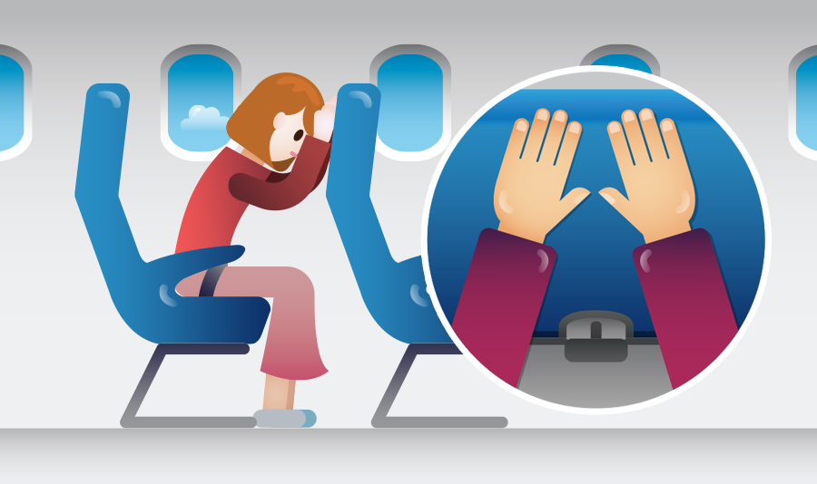
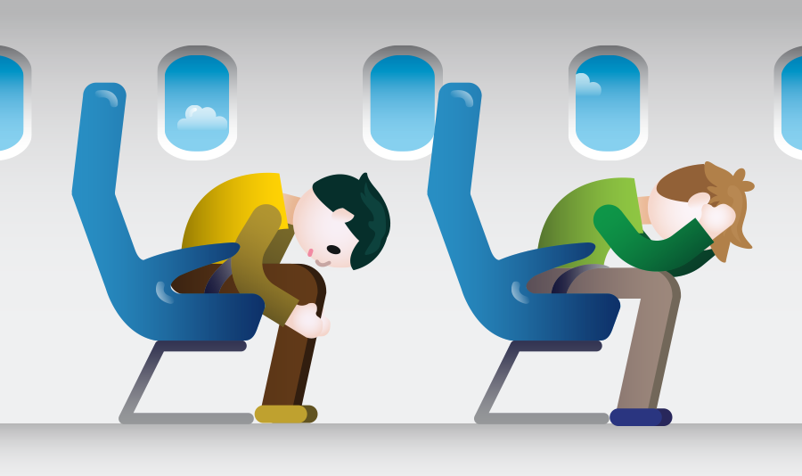

안전벨트를 매고, 손과 머리를 앞좌석 등받이에 댑니다. 앞좌석이 없거나 간격이 넓은 경우, 상체를 숙이고 손은 머리를 감싸거나 정강이를 잡습니다. 이 자세를 브레이스 포지션(‘끌어안기’ Brace Position)이라고 합니다.
 
상체를 숙이는 것이 중요합니다. 몸을 세우고 있으면 충돌할 때 등받이가 흔들려 허리에 강한 충격을 받게 되고, 몸이 갑자기 앞으로 기울면서 앞좌석에 머리를 세게 부딪힐 수 있습니다.
손목이 꺾이거나 튕겨나가지 않도록 하는 조치로서 손은 앞좌석 등받이에 대거나, 머리를 감싸거나, 정강이를 꼭 잡거나, 무릎 아래에 넣습니다.
손가락 관절 부상을 입지 않으려면 깍지는 끼지 말아야 합니다. 팔꿈치를 몸 쪽으로 붙여야 팔걸이나 날아다니는 다른 물체에 부딪혀 다칠 가능성이 적습니다.
바닥이 요동칠 때 발목이 튕겨나가 골절상을 입지 않도록 발은 가능한 뒤쪽으로 끌어당겨 바닥을 꼭 딛습니다.
유아를 동반한 경우 아기를 안고 몸을 숙여 최대한 브레이스 포지션에 가깝게 합니다.
고도가 높을 때 산소마스크가 내려오면 씁니다. 그러나 지면 가까운 곳에서, 충돌이 임박했을 때는 산소마스크가 내려오더라도 일어서거나 팔을 뻗지 말고 충돌 대비 자세를 유지하세요.